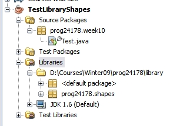

Note: If you did not do the Shapes Hierarchy exercise, (Shape, ThreeD, Circle, Sphere, Cylinder, Square, Cube) then you will need to download the source code files for this class.
You're getting to a point where you will be re-using a lot of your code (methods, constants, etc). Up to now, you've probably been copying and pasting re-used code from one program to another. This is not a desireable solution. One of the main ideas behind object-oriented programming is to be able to reuse your code by calling a particular method or referring to a particular constant as needed. It's actually fairly easy to implement this! All you need to do is create a location and set of files where you will store your classes, methods, and constants, and then tell Java where it can find everything when you use your library in your programs.
The class or classes in which you organize and store your reusable code is commonly referred to as a "code library", or "library of functions". To learn how a code library works, we'll start by making our Shape hierarchy of classes available to other programs and projects.
First, you need to set up a location for your class library files. You can pick any location on your computer, but I prefer to use a "library" directory in my main coding directory. For this tutorial, I'm going to set up the library directory right in the root of the prog24178 directory. For example:
D:\Courses\Winter09\prog24178\library
Since some of you will be taking other programming courses, you might want to choose a location that is not term- or course-specific; you might prefer something more "central" to other programs you will be writing in the future. Regarldess, for the rest of this tutorial, I'll refer to this directory as "the library directory".
Earlier in the course, we discussed packages. By now you've either come up with your own package name (according to industry standards, of course) or you've been using something course-related such as the course code followed by the unit name or week number, e.g. prog24178.swinggui or prog24178.weekX (where X is the week number). If haven't been creating your own package name, you will need to go back and review the material on Packages before continuing.
Choose a root name for your package. As mentioned previously, you can use your domain name if you have one, or you can use prog24178 if you don't have your own domain or you don't wish to use it.
For this tutorial, I'll be using prog24178. The hierarchy of shape classes are going to be in a package called prog24178.shapes. If you choose your own domain name, just stick ".shapes" on the end to come up with the package name for this tutorial. For example, my domain package name is wsj.terminallearning, so I would use wsj.terminallearning.shapes.
For the rest of this tutorial, I'll use prog24178.shapes as the package name and refer to it as the "shapes package".
Once you've created a library directory and determined the name of your package, you will need to locate and open the project that contained the Shape class hierarchy we worked on at the beginning of term (Shape, Circle, Cylinder, etc). If you don't have this project, you can copy the source files from the course discussion board.
Open up the Shapes project (If you followed the in-class demo, it's probably called OOPReview or Inheritance or something similar). Open up the Source Packages node and make sure all the files are there.
In this tutorial, we are creating the library based on existing source code. You can also follow these steps to create a new library of code from scratch, or to refactor old code to create a library of code you've been using frequently.
When you create a class library project, there's no package - only the default package appears: find and open the Source Packages node. You should see the default package listed, but with nothing in it.
You need to create the shapes package discussed earlier:
Your library project is now ready! If you are creating a library from scratch, you can now add classes and code just as you would in any other project. See the instructions below on how to create a JAR for your project, put it into your library, and use it in other programs.
We now need to add the shape hierarchy of classes to the library project. Be careful! You have two projects open right now: the library project you just created from scratch, and the old shapes project from week 2/3.
These next steps copy the shape classes into your library project:
Now, if you open the library project's Source Packages node, you should see the 7 source files the prog24178.shapes package.
A JAR (Java ARchive) file is a file that can contain a set of Java classes (such as a code library) or that can be an actual Java program. Later in the course, you'll learn how to deploy Java programs by compiling them into a JAR file. A user can then run your program simply by double-clicking the JAR file in file manager, or by creating a desktop shortcut or menu item to it! However, for now, we'll start off by creating a JAR file with the set of shape classes we'll be using in other programs.
Creating a JAR in Netbeans is extremely simple. The only thing you need to worry about is whether it's created automatically when you compile, or not.
If you have the "Compile on Save" option turned off (see project properties in the Build/Compile node) then your JAR file is probably being created and updated each time you manually build the program.
If you have this option turned on (most of you probably do) then you need to create the JAR yourself. To do this, just right-click the project node and select "Clean and Build" from the context menu. Do this now to create the JAR for your shapes package.
Once your JAR file has been created, you can find it in your project's "dist" folder. If you go there now, you should see your JAR.
Remember that your JAR file has the same name as your library project name, unless you changed it by editing the project.properties file.
Add the JAR to the Library:To add the shapes JAR to your library, simply copy the file and move it into your library folder! That's it!
When you make changes to classes in your library, you'll need to update your JAR using "Clean and Build", and you'll need to copy the updated JAR file to your library.
We're done with the original shapes class, so you can close that project. You might want to leave your shape library project open in case you find any bugs or errors in the remainder of this tutorial.
To use your library in another project, you just add it to the project by using the Library node or the Library settings of the project properties window. For example, let's create a test project that uses an array of various shape objects.

That's it! Let's try it out!
Go to the main method of your test project and add some code that uses your Shape objects. Examples:
Shape[] shapes = new Shape[5];
Circle circle = new Circle(5); Cylinder cyl = new Cylinder(2, 3);
You'll notice that your statements turns red! If you hover over the red lines, you'll see that it can't understand your reference to the Shape class. If you click the icon on the left, you'll see that it offers you the option to import the Shape class from the shapes package!
Rather than import just the Shape class, let's import all the shapes classes. Add the import prog24178.shapes.*; statement to your test class (use whatever package name you defined earlier).
You can now use the classes and methods in the Shapes class in your project!
Many times you'll have a set of static methods that you'd like to use in a variety of programs. Let's start off with a simple utilities class that contains some methods you might find useful:
1. Making a rightJustify() method
This method is useful when you want to print a text value formatted to be right justified instead of the default of left justified. This is helpful when you're doing column headings or reports with mixed data types. For example, it can be used to line up numeric values on the decimal point.
To right justify, you need to know how many character spaces a value should display in. For example, say you decide to display a set of numberic floating point values displayed in 7 character spaces. If a value is 1.00 (4 characters) then you will need an additional 3 character spaces to the left of the value to force it to be right justified. If a value is 10.00 (5 chars) you need 2 spaces to the left to make it right justified. You can use a loop to concatenate size-length spaces:
public static String rightJustify(String value, int size) {
int numSpaces = size - value.length();
for (int i=1; i<=numSpaces; i++)
value = " " + value;
return value;
}
Add this static method to your library Utils class and build your JAR file.
Try this method out in your Application that you created in the previous class to test your Shapes library:
To use:
// print some numbers
System.out.println(WsjUtils.rightJustify(".2", 6));
System.out.println(WsjUtils.rightJustify("1.23", 6));
System.out.println(WsjUtils.rightJustify("74", 6));
2. Making an Exit method
How often do you use a confirm dialog to confirm program termination with the user? Often enough to copy and paste it every time? This method will be handy: you won't have to copy and paste the same long statement into your GUI program every time!
Add a static method that asks the user, "Are you sure you wish to exit?" using a Confirm dialog from the JOptionPane class. The method should return true if they say yes, false if they don’t.
Add this method to your Utils library and rebuild the JAR. Note that you'll need to copy the new version of your JAR to your library folder.
To use:
if (WsjUtils.exitOk())
System.exit(0);
Test this out in your test application. If you're testing on the console then you might want to add an else to your if-statement, such as:
if (WsjUtils.exitOk())
System.exit(0);
else
System.out.println("Kidding, exiting anyway.");
NOTE: An even BETTER version of this method will accept the exit message as a String paramter! Then the programmer can display any exit message they like such as "Are you quitting?" or "Do you really want to exit?"
3. Making a method useful with KeyEvent Handlers
When you learned to handle keyboard events, you probably did an example where a user can only type digits into a text field (or maybe all characters, or whatever). This sample method can be one of many methods that will be useful for key event handling.
Add a static method ignoreNonDigit(char key) that checks to see if the given key character is not a digit. If the character is a digit, return it. Otherwise, return the null-char '\0'. Recall that replacing a typed key with the null-char will appear to the user that their key presses are doing nothing.
Your method should be static and accept a char param representing the key that you need to test. The method should examine the char to see if it isn't a digit (hint: Character.isDigit(chVal)). If it isn't a digit, return '\0', otherwise just return the original char param value.
To test this out in a keyPressed() event:
char key = event.getKeyChar(); event.setKeyChar(WsjUtils.tossNotDigit(key));
To test this in a console program:
System.out.println("digit? " + WsjUtils.tossNotDigit('n'));
System.out.println("digit? " + WsjUtils.tossNotDigit('1'));